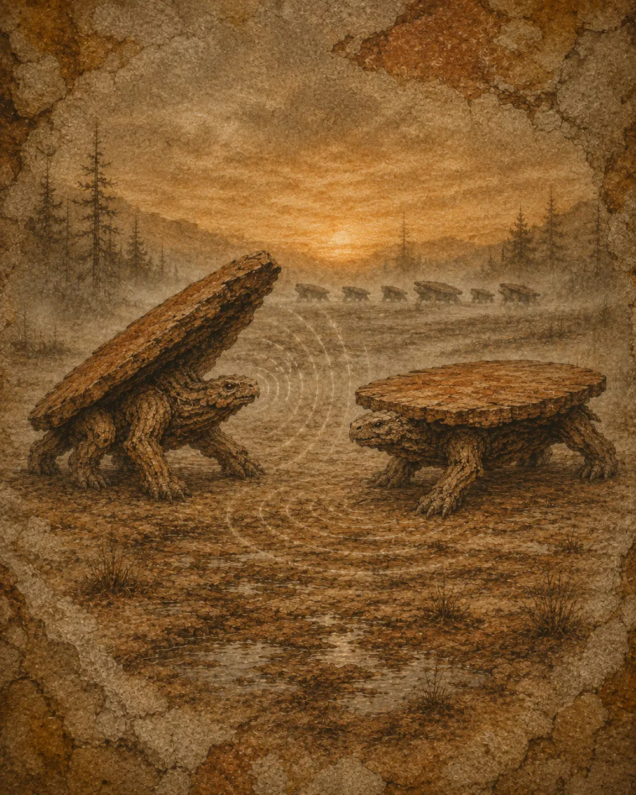

Communication
La table n’a ni bouche, ni cordes, ni cri. Pour se parler, elle se sert de son bois, de ses pattes et du sol lui-même.

Son langage premier est le grincement : en faisant jouer ses jointures, elle module de longues plaintes de bois. Chaque harde a son « accent », hérité de l’essence dont elle est faite.
Vient ensuite le tambourinage — un coup sec de la patte sur le sol — puis le langage du corps : un plateau incliné est une invitation, dressé une menace. La matriarche, elle, émet par tout son bois des vibrations si graves que la harde les ressent par les pattes, à des kilomètres.
Dictionnaire de sons
Six « mots » parmi les plus courants, synthétisés à partir de bois. Approchez l’oreille — et montez le son.
« Danger ! »
Alarme · tambourinageCoups secs et rapides d’une patte sur le sol. Toute la harde se fige, puis se referme en réfectoire.
« De l’eau »
Découverte · grincement montantUne longue plainte de bois qui s’élève, jointures qui chantent. Appelle la harde vers un point d’eau.
« Je suis là »
Contact · grincement graveUn craquement bref et profond, répété dans la nuit pour garder le lien sans révéler sa position.
« Au rassemblement »
Appel matriarcal · vibrationOnde basse fréquence émise par tout le bois de la Grande Desserte. On ne l’entend pas : on la sent.
« Parade »
Nuptial · tambourinage rythméUne cadence régulière, accompagnée du lent déploiement de la rallonge. L’invitation à l’emboîtement.
« Détresse »
Tabouret perdu · grincement aiguUne plainte haute et tremblante qui porte loin. Le cri du petit séparé de la harde — déchirant.